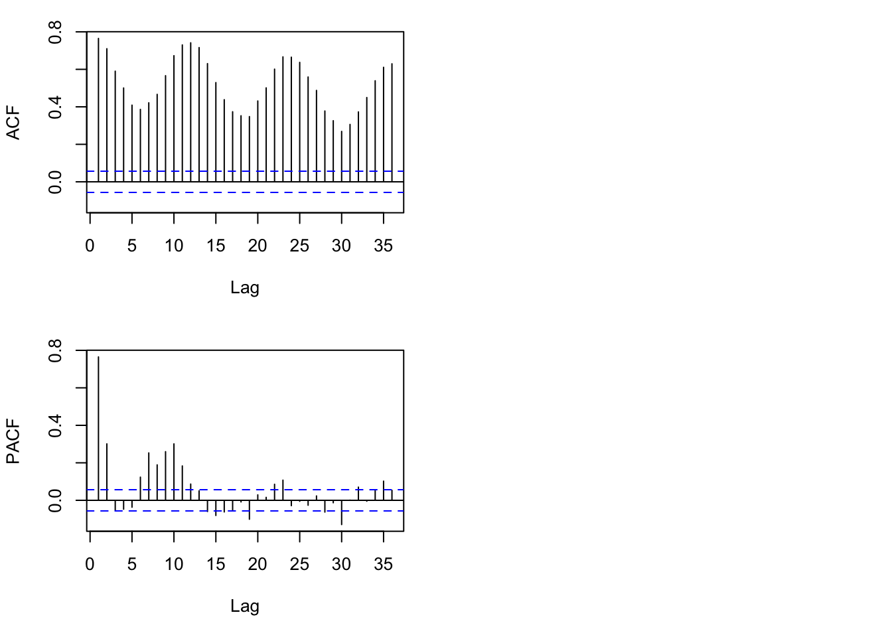
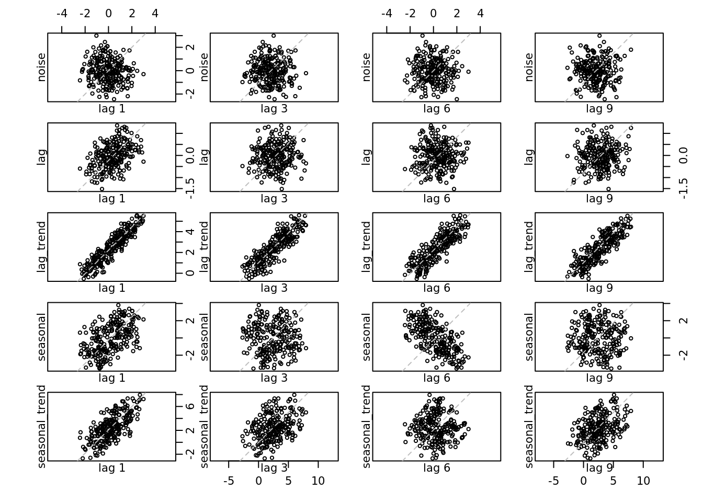
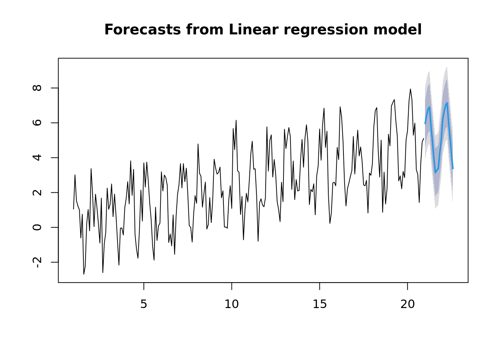
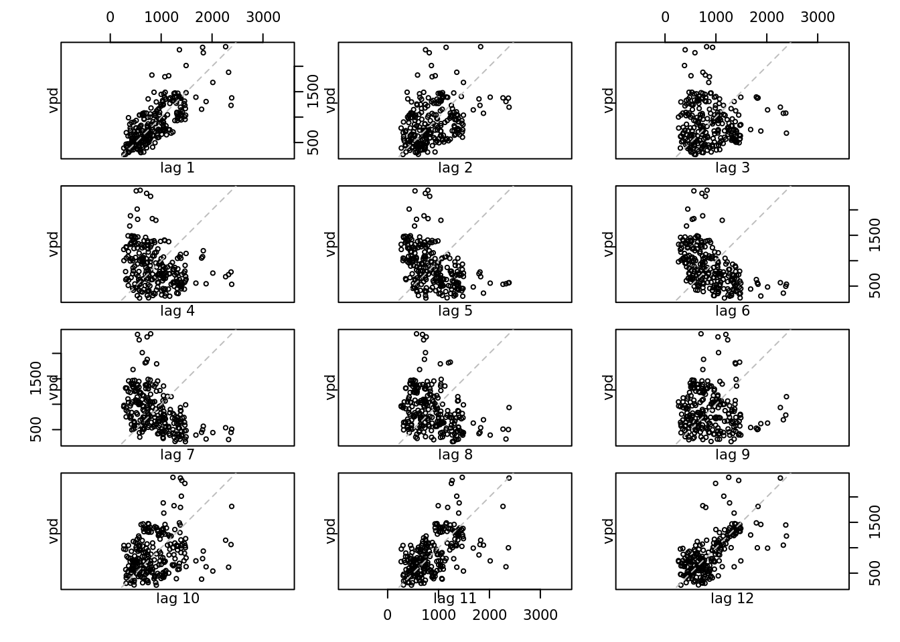
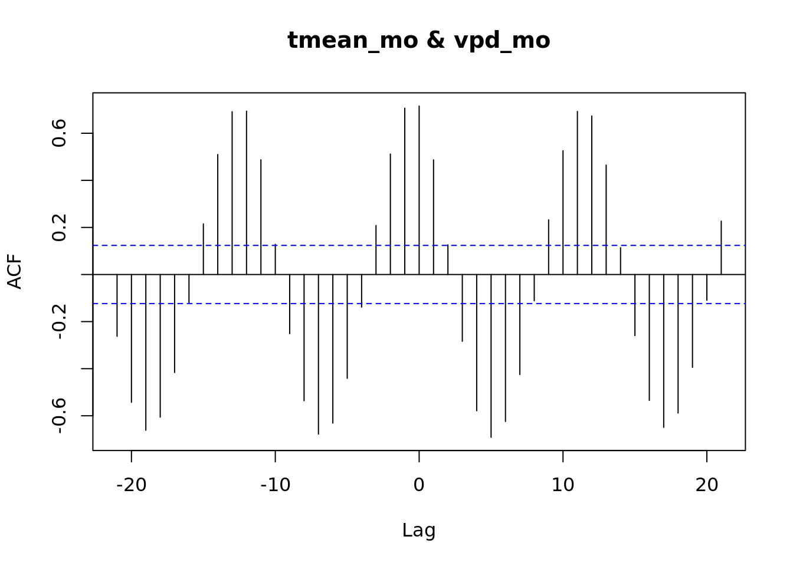
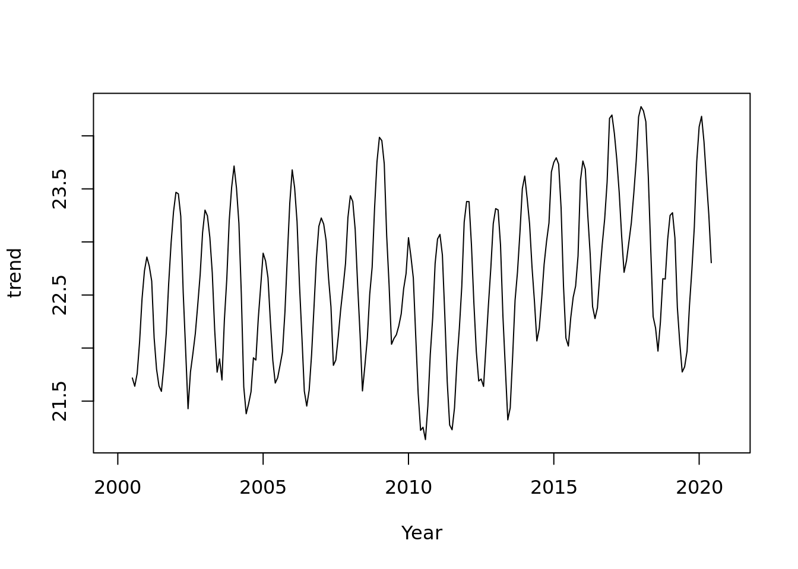
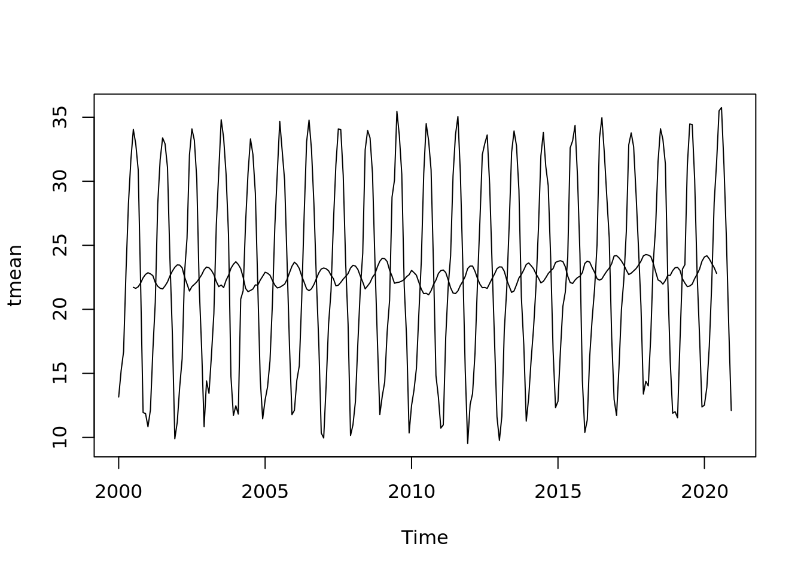
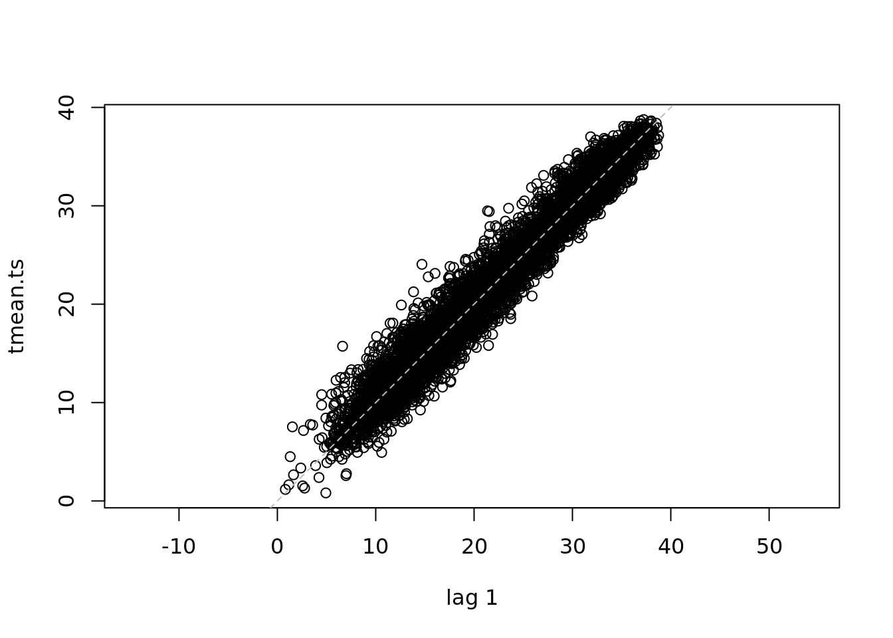
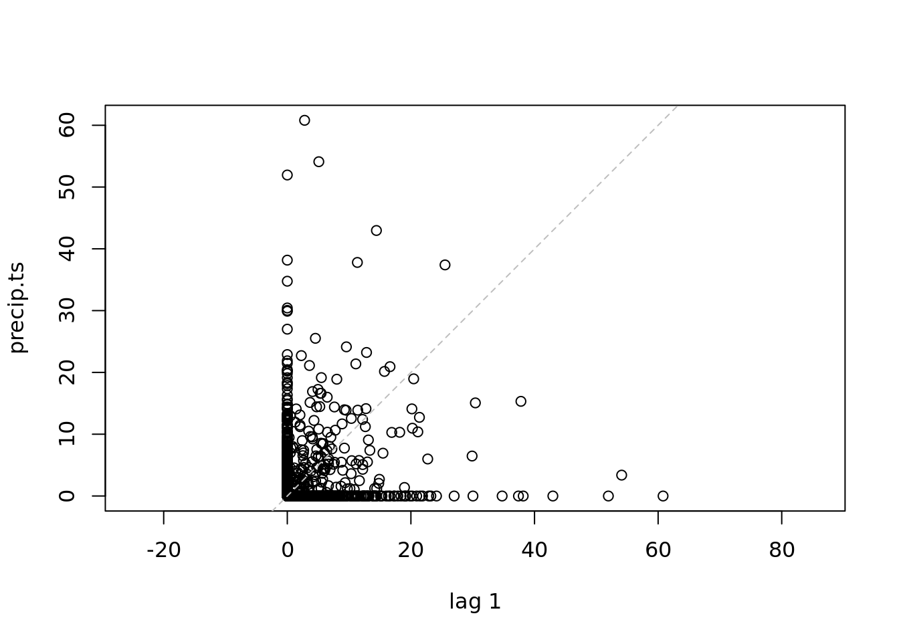
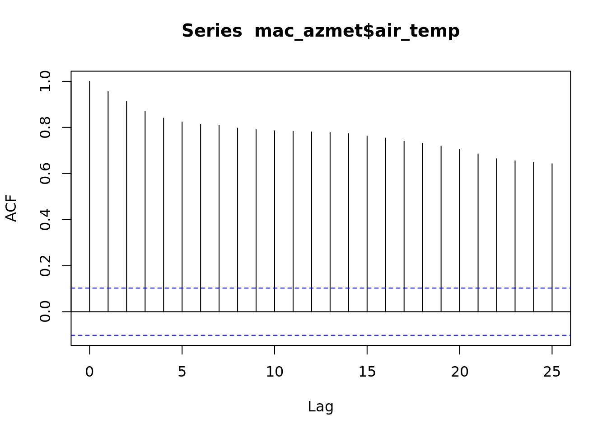

1 Session 1: Time Series and Forecasting
1.1 Learning Objectives
These lessons are the equivalent of a city bus tour. They are a high level tour of some useful functions.
There are plenty of more detailed lessons on the internet. I would recommend starting with the “Forecasting Principles and Practice v2” by Rob Hyndman who wrote the forecast package.
Today we will take a tour with the predict function in R, as well as some advanced time series statistics that are provided by the forecast package.
In this session you will learn how to
- Simulate data and test if your model is working as expected
- Use linear regression to fit and predict time series
- Visualize data
- Decompose a time series into seasonal, trend, and error
a note on the forecast package Hydnman and others are creating the successor to the forecast package called ‘feasts’. The next version of the text uses this package https://otexts.com/fpp3/.
1.2 Linear regression, with time as a predictor
Both the simulation of data and the fitting of the model here is a general approach. It is demonstrated with a simple regression model of increasing \(Y\) as a funciton of time. But simulating data can be very useful in understanding your data, your model, and the about statistics in general.
First, lets define our data model.
We want to fit. simulate a time series of one observations on each of ten subsequent dates:
Our data model is effectively
\[ Y_{\textrm{linear}}=1+2t +\epsilon\\ \epsilon\sim N(0,1) \] Where y is the mass of your favorite organism. They are born on day 0 with 1 g and growth on average is 2 grams per day.
library(forecast)## Registered S3 method overwritten by 'quantmod':
## method from
## as.zoo.data.frame zoolibrary(dplyr)##
## Attaching package: 'dplyr'## The following objects are masked from 'package:stats':
##
## filter, lag## The following objects are masked from 'package:base':
##
## intersect, setdiff, setequal, unionlibrary(lubridate)##
## Attaching package: 'lubridate'## The following objects are masked from 'package:base':
##
## date, intersect, setdiff, unionlibrary(broom)
set.seed(103)
days <- 0:9
mass <- vector(length = 10)
for(t in seq_along(days)){
mass[t] <- 1 + 2 * days[t] + rnorm(1, 0, 1)
}
linear_data <- data.frame(day = days, mass = mass)
plot(mass~day,
data = linear_data,
ylab = 'mass (g)',
ylim = c(1, 20),
xlim = c(0, 15))Now, we can fit a linear regression, and estimate the parameters. Did the model find the ‘right’ values?
mod_linear <- lm(mass ~ 1 + days, data = linear_data)
tidy(mod_linear)## # A tibble: 2 × 5
## term estimate std.error statistic p.value
## <chr> <dbl> <dbl> <dbl> <dbl>
## 1 (Intercept) 0.316 0.560 0.565 0.588
## 2 days 2.07 0.105 19.8 0.0000000447Did we recover the correct parameters from the simulated data?
Don’t forget to check assumptions! plot(lm)
mod_linear##
## Call:
## lm(formula = mass ~ 1 + days, data = linear_data)
##
## Coefficients:
## (Intercept) days
## 0.3162 2.0740## you can look at model statistics
summary(mod_linear)##
## Call:
## lm(formula = mass ~ 1 + days, data = linear_data)
##
## Residuals:
## Min 1Q Median 3Q Max
## -1.47732 -0.56699 0.04552 0.57197 1.35582
##
## Coefficients:
## Estimate Std. Error t value Pr(>|t|)
## (Intercept) 0.3162 0.5601 0.565 0.588
## days 2.0740 0.1049 19.768 4.47e-08 ***
## ---
## Signif. codes: 0 '***' 0.001 '**' 0.01 '*' 0.05 '.' 0.1 ' ' 1
##
## Residual standard error: 0.953 on 8 degrees of freedom
## Multiple R-squared: 0.9799, Adjusted R-squared: 0.9774
## F-statistic: 390.8 on 1 and 8 DF, p-value: 4.466e-08## don't forget to check assumptions, etc
## this is helpful even when you simulate and you know
## that the data generating process is valid; get an idea of what is 'okay'
# plot(mod_linear)1.3 Time series ‘feature extraction’
We’ve already extracted features from our time series. What are ‘features’? These are properties underlying the data. In this case, the information in our time series has been condensed into a slope and intercept.
There are a lot of other mathematical functions that can be fit to your data, and properties of these functions that can be extracted, and used in subsequent analyses.
Bolker (2007) provides a ‘bestiary of functions’ in chapter 3 of his book “Ecological Models and Data in R”. It provides some biological meanings and useful contexts for a variety of linear and non-linear, continuous and discontinuous functions.
This is a common and very useful way of converting a time series into features.
For an example of Bayesian logistic regression using JAGS, see the work done by Jessica Guo and me: https://github.com/genophenoenvo/JAGS-logistic-growth.
Dietze’s Ecological forecasting course shows how to simulate a logistic growth curve using Monte Carlo methods. https://github.com/EcoForecast/EF_Activities/blob/master/Exercise_02_Logistic.Rmd
There are a huge number of other methods for ‘dimensionality reduction’. Principal components analysis is an important one. Another is taking a full resolution image and reducing the resolution to a few pixels square, and everything in between. In the ‘machine learning’ world a wide range of methods are used in a process that they call ‘encoding’ .
1.3.1 The ‘predict’ function: forecasting with a fitted regression model
The predict function in R has a variety of uses. Last week we learned how to use it to impute missing data values. This week, we will learn how to use it to predict the next time points in our time series.
First step, lets predict what is the expected value on the subsequent few days. This is using the fitted slope and intercept to plot a single value on the regression line for each day.
We will plot the data in black, the new points in red, and the regression line.
newdays <- 11:15
newdat <- data.frame(days = newdays)
preds <- predict(mod_linear,
newdata = newdat)
plot(mass ~ day,
data = linear_data,
ylab = 'mass (g)',
ylim = c(1, 30),
xlim = c(0, 15)) +
points(newdays, preds, col = 'red') +
abline(coef(mod_linear)) +
abline(confint(mod_linear)[,1], lty = 2) +
abline(confint(mod_linear)[,2], lty = 2)## integer(0)Now, we have predicted the next five days of growth!
1.4 Time Series objects in R
R has a specific type of time series ‘object’. that is analogous to a ‘data.frame’, but special. It is called a time series object - ‘ts’ (or ‘mts’ for a multivariate time series). See ?ts
Lets create time series objects so that we can use some of the basic functions for time series analysis.
How to make a time series object.
Last week when we learned about the imputeTS package, we skipped over what we actually did to make a time series object.
We set the start and end by year and index, and then either a time step ‘deltat’ or frequency.
Values of frequency (per year): - daily data: 365 - monthly: 12 - hourly: 365*24 - etc
Lets make some sample monthly time series for three cases
- for white noise: \(Y=\epsilon\)
- with autocorrelation with a 1 month lag \(Y_t=\frac{Y_{t-1}+Y_{t}}{2}\)
- with autocorrelation and a trend \(Y_t=\frac{Y_{t-1}+Y_{t}}{2} + \frac{t}{48}+\epsilon\)
- with seasonal patterns \(Y_t=\sin(\frac{2\pi t}{12})+\epsilon\)
- with seasonal patterns and a trend \(Y_t=\sin(\frac{2\pi t}{12})+\frac{t}{48} + \epsilon\)
Where \(t\) is the time step (in units of months). The second equation takes the average of the last time step and the current one (a moving window of size 2). The third equation adds a trend - every month the value increases by 1/120.
set.seed(210)
months <- 1:240
noise <- rnorm(length(months))
lag <- vector()
for(t in 1:length(months)){
if(t == 1){
lag[t] <- rnorm(1)
} else {
lag[t] <- (lag[t-1] + noise[t]) / 2
}
}
lag_trend <- lag + months / 48
seasonal <- 2*sin(2*pi*months/12) + noise
seasonal_trend <- seasonal + months / 48 Now lets create the multivariate time series object:
all <- ts(data = data.frame(noise, lag, lag_trend, seasonal, seasonal_trend),
frequency = 12)
plot(all)
tsdisplay(all)
Lets look at some basic statistics: which of these have a lag?
This plot will show the correlation between \(Y_t\) and \(Y_{t-\textrm{lag}}\)
lag.plot(all, set.lags = c(1, 3, 6, 9))1.4.1 Autocorrelation plots
acf(all[,'noise'], xlab = 'Lag (years)')
acf(all[,'lag'], xlab = 'Lag (years)')
acf(all[,'seasonal'], xlab = 'Lag (years)') ### Time Series Decomposition
### Time Series Decomposition
We want to look at a time series in terms of its components.
R has a number of handy functions for basic time series analysis. Lets take a look.
Lets look at some of the basic components of a time series
- seasonal patterns
- trend
- residuals
dec <- decompose(all[,'seasonal_trend'])
plot(dec)
dec_df <- data.frame(trend = dec$trend, month = months)
dec_df <- dec_df[!is.na(dec_df),]
tidy(lm(trend ~ month, data = dec_df))## # A tibble: 2 × 5
## term estimate std.error statistic p.value
## <chr> <dbl> <dbl> <dbl> <dbl>
## 1 (Intercept) 0.101 0.0345 2.92 3.85e- 3
## 2 month 0.0197 0.000251 78.5 6.10e-1661.4.2 Seasonal Trend with Loess smoothing (STL) decomposition
The seasonal component of the decomposed time series is very regular. The acf() function creates a seasonal component using the means. Lets look at a more sophisticated model - the seasonal trend with local (Loess) smoothing
If we are interested in a longer term trend, lets use the Seasonal trend w/ local smoothing Loess (STL) to smooth over a few years.
- trend window > seasonal window
- has some rule of thumbs for estimating the parameters
seasonal_stl <- stl(all[,'seasonal_trend'], s.window = 6)
plot(seasonal_stl)
## note how you can access each component of the decomposed time series
## plot(seasonal_stl$time.series[,c('trend', 'seasonal', 'remainder')])1.4.3 Now we can analyze the trend
tmp <- data.frame(month = months, trend = seasonal_stl$time.series[,'trend'])
#plot(tmp$month, tmp$trend)
fit <- lm(trend ~ month, data = tmp)
coef(fit)## (Intercept) month
## 0.10136347 0.01981641tidy(fit)## # A tibble: 2 × 5
## term estimate std.error statistic p.value
## <chr> <dbl> <dbl> <dbl> <dbl>
## 1 (Intercept) 0.101 0.0277 3.66 3.14e- 4
## 2 month 0.0198 0.000199 99.4 8.74e-196z <- rnorm(10000, 0.019, 0.0002208)What does that coefficient ‘month’ mean?
1.4.4 Some Time Series Model Acronyms
ARIMA Models
You will often see time series models specified as ARIMA(p,d,q)
AR: AutoRegressive time series I: Integrated MA: Moving Average smoothing
- p number of lags
- d degree of differencing
- q size of moving average window
The forecast::auto.arima function automatically fits these parameters. See https://otexts.com/fpp2/arima-r.html for an explanation of how this function works.
STL Seasonal Seasonal Decomposition of Time Series by Loess. Extracts trend, seasonal, and locally smoothed moving average (described above).
ETS Exponential smoothing state space model.
1.4.5 State Space Models
- Latent variable - this is the process of interest. Not directly measured, but measured with an ‘observation model’ a.k.a. whatever is used to actually measure - often boils down to changes in an electric current that capture a property of interest.
It could be a model of a pendulum or similar dynamical system.
https://upload.wikimedia.org/wikipedia/commons/2/24/Oscillating_pendulum.gif
{kind=link}
Ruryk, CC BY-SA 3.0, via Wikimedia Commons
{kind=link}
Imagine you are interested in ‘growth rate’. Then you measure the size (how? mass? length?…) of your tree, fish, or other organism of interest. Yesterday, today, and tomorrow. You can then estimate the growth rate by these differences. In turn, the growth rate could also be controlled by time, temperature, resource availability. These might each have its own latent and observed variables.
- State-space models
State space models are models of how the state of a system changes over time.
A state-space They provide a series of equations that represent how a system evolves in time. These models are widely used in the study of complex systems.
For example, a model of population dynamics that accounts for growth, reproduction, and death, geophysical at a particular place. Rocket scientists and robotics engineers, car manufacturers and video game designers all use complex models of a system that function in this way.
Such a model can take parameters for equations that control the the dynamics of the system (e.g ‘growth rate’). you know the state of a system, and how the system changes in time, you can use a state-space framework. once it represents the current state, it can be represent the state of a system. Conceptually, they are a way of modeling time series when you have a model of the ‘process’ or mechanism that moves the system state from \(t\) to \(t+1\).
The ‘state’ of the system may be partially unobserved. But we can infer these states based on observations.
The concept of a ‘data generating process’ is an important concept when modeling, and when synthesizing data from many different locations. A ‘data generating process’ includes both the system being studied and the tools used to observe. It is common to hear people refer to data as if it is the truth. But data can only represent an incomplete view of the system itself. In the end both data and models are representations of a system.
Consider satellite imagery, radiative transfer models.
1.5 Ecological Forecasting
Like time series, forecasting is a very large area of research.
Ecological forecasting is an emerging discipline, and it covers both basic research and the application of ecological understanding to applications. Forecasts can help provide insights into the future state of a system as well as provide guidance on management scenarios.
That is exactly what it sounds like you need to do!
Some examples of ecological forecasting problems:
Where is the hurricane going to end up?
How much carbon can the land store?
How will flooding affect delta planton and fish populations?
Predict the potential yield of different crops under future climates

Predict forest green up and senescence
Key references include Clark et al 2001 and Dietze et al 2018 below. The Ecological Forecasting Initiative (EFI, ecoforecast.org) is a Research Coordination Network that you can join to learn and contribute to the development of this field.
1.5.1 Forecasting Challenges
There are a variety of forecasting challenges. These can be found on sites like Kaggle. Lets look at a few
- EFI NEON forecasting Challenge
- phenology, net ecosystem exchange, beetle abundance, water temperature and dissolved oxygen
- Kaggle: Predict end of season Sorghum biomass from photograps
- HiveMind / Agrimetrics UK Wheat yield forecast market Yield 21
A note on challenges. Framing a problem as a challenge is a great way to engage the machine learning world. And these challenges provide a way to engage other communities, and lower the barrier to entry and more level playing field than many scientific pursuits. For challenges like those on Kaggle and the ones run by EFI, the best model wins.
1.5.2 The forecasting toolbox
As we discussed last week, there are some simple or ‘naiive’ ways to forecast. These approaches are useful, sometimes because they perform well and other times because they provide a reasonable null hypothesis. Some use the same methods that we used to interpolate.
The forecast package has a lot of handy functions for time series data. Lets start with the moving average.
ts_fit <- tslm(all[,'seasonal_trend'] ~ trend + season, data = all)
summary(ts_fit)##
## Call:
## tslm(formula = all[, "seasonal_trend"] ~ trend + season, data = all)
##
## Residuals:
## Min 1Q Median 3Q Max
## -2.38078 -0.75775 0.00508 0.66206 3.07359
##
## Coefficients:
## Estimate Std. Error t value Pr(>|t|)
## (Intercept) 1.1748074 0.2541379 4.623 6.36e-06 ***
## trend 0.0198631 0.0009559 20.779 < 2e-16 ***
## season2 0.4392801 0.3240430 1.356 0.176566
## season3 0.7756155 0.3240472 2.394 0.017501 *
## season4 0.8870021 0.3240543 2.737 0.006687 **
## season5 -0.2126591 0.3240642 -0.656 0.512344
## season6 -1.1311337 0.3240769 -3.490 0.000579 ***
## season7 -2.1118427 0.3240924 -6.516 4.60e-10 ***
## season8 -2.9644339 0.3241107 -9.146 < 2e-16 ***
## season9 -2.8423310 0.3241318 -8.769 4.33e-16 ***
## season10 -2.7612880 0.3241558 -8.518 2.25e-15 ***
## season11 -1.8829512 0.3241826 -5.808 2.12e-08 ***
## season12 -1.1995549 0.3242122 -3.700 0.000271 ***
## ---
## Signif. codes: 0 '***' 0.001 '**' 0.01 '*' 0.05 '.' 0.1 ' ' 1
##
## Residual standard error: 1.025 on 227 degrees of freedom
## Multiple R-squared: 0.7859, Adjusted R-squared: 0.7746
## F-statistic: 69.44 on 12 and 227 DF, p-value: < 2.2e-16plot(forecast(ts_fit, h = 20))
Now if you aren’t careful, it can automagically fit some fancy model. In this case, the STL+ETS(A,A,N). Is a combination of a Seasonal Trend with Loess and an Exponential smoothing state space model.
ts_fit <- stlf(all[,'seasonal_trend'])
plot(forecast(ts_fit))
summary(ts_fit)##
## Forecast method: STL + ETS(A,A,N)
##
## Model Information:
## ETS(A,A,N)
##
## Call:
## ets(y = na.interp(x), model = etsmodel, allow.multiplicative.trend = allow.multiplicative.trend)
##
## Smoothing parameters:
## alpha = 0.0012
## beta = 1e-04
##
## Initial states:
## l = 0.2543
## b = 0.0196
##
## sigma: 0.9432
##
## AIC AICc BIC
## 1293.233 1293.489 1310.636
##
## Error measures:
## ME RMSE MAE MPE MAPE MASE
## Training set -0.0212728 0.935272 0.7629923 -67.57334 137.2387 0.6723794
## ACF1
## Training set -0.1277774
##
## Forecasts:
## Point Forecast Lo 80 Hi 80 Lo 95 Hi 95
## Jan 21 5.421475 4.212761 6.630189 3.5729060 7.270044
## Feb 21 6.082280 4.873564 7.290995 4.2337091 7.930850
## Mar 21 7.348352 6.139636 8.557069 5.4997796 9.196925
## Apr 21 7.201374 5.992656 8.410092 5.3527988 9.049948
## May 21 5.801197 4.592477 7.009916 3.9526193 7.649774
## Jun 21 4.807066 3.598345 6.015788 2.9584861 6.655646
## Jul 21 3.655230 2.446506 4.863953 1.8066464 5.503813
## Aug 21 2.825036 1.616310 4.033761 0.9764489 4.673622
## Sep 21 3.036527 1.827798 4.245255 1.1879362 4.885117
## Oct 21 3.037751 1.829020 4.246482 1.1891561 4.886346
## Nov 21 3.905910 2.697176 5.114644 2.0573106 5.754509
## Dec 21 5.085809 3.877071 6.294546 3.2372042 6.934413
## Jan 22 5.650127 4.441386 6.858868 3.8015168 7.498737
## Feb 22 6.310932 5.102187 7.519677 4.4623156 8.159547
## Mar 22 7.577004 6.368255 8.785753 5.7283817 9.425626
## Apr 22 7.430025 6.221272 8.638779 5.5813961 9.278655
## May 22 6.029848 4.821090 7.238607 4.1812116 7.878485
## Jun 22 5.035718 3.826954 6.244482 3.1870732 6.884363
## Jul 22 3.883881 2.675112 5.092651 2.0352281 5.732535
## Aug 22 3.053687 1.844912 4.262463 1.2050249 4.902350
## Sep 22 3.265178 2.056397 4.473960 1.4165064 5.113851
## Oct 22 3.266403 2.057614 4.475191 1.4177202 5.115085
## Nov 22 4.134562 2.925766 5.343357 2.2858684 5.983255
## Dec 22 5.314460 4.105657 6.523264 3.4657555 7.163165plot(forecast(ts_fit, h = 20))1.6 Your Turn - Some Actual Data!
1.6.1 Example 1: A twenty year history of weather in Maricopa, AZ
We looked at this lastweek.
These are daily statistics from ‘DayMet’. Daymet isn’t actually observed data - it is ‘imputed’ data. So, it is available for everywhere in the continental US from 1980 on a 1km grid.
We will also use it in the model analysis lesson to compare this imputed ‘model’ data with ground truth observations.
You can learn more about it here: https://daymet.ornl.gov/ and Thornton et al 2021.
While we have a sample of the dataset in the lesson repository for a particular site, it is useful to know how to access the data for your site.
Just change the lat, lon, start and end times to look at your favorite site!
library(daymetr)
mac_daymet_list <- download_daymet(site = "Maricopa Agricultural Center",
lat = 33.068941,
lon = -111.972244,
start = 2000,
end = 2020, internal = TRUE)
# rename variables, create a date column
mac_daymet <- mac_daymet_list$data %>%
transmute(date = ymd(paste0(year, '01-01'))+ days(yday) -1,
precip = prcp..mm.day.,
tmax = tmax..deg.c.,
tmin = tmin..deg.c.,
tmean = (tmax + tmin) / 2,
trange = tmax - tmin,
srad = srad..W.m.2.,
vpd = vp..Pa.)
readr::write_csv(mac_daymet, file = '../data/mac_daymet.csv')Lets read in and look at the data
mac_daymet <- readr::read_csv('../data/mac_daymet.csv') %>%
select(date, precip, tmean, srad, vpd)## Rows: 7665 Columns: 8## ── Column specification ────────────────────────────────────────────────────────
## Delimiter: ","
## dbl (7): precip, tmax, tmin, tmean, trange, srad, vpd
## date (1): date##
## ℹ Use `spec()` to retrieve the full column specification for this data.
## ℹ Specify the column types or set `show_col_types = FALSE` to quiet this message.head(mac_daymet)## # A tibble: 6 × 5
## date precip tmean srad vpd
## <date> <dbl> <dbl> <dbl> <dbl>
## 1 2000-01-01 0 12.2 203. 936.
## 2 2000-01-02 0 8.24 225. 680.
## 3 2000-01-03 0 6.72 284. 504.
## 4 2000-01-04 0 8.92 287. 582.
## 5 2000-01-05 0 8.86 292. 566.
## 6 2000-01-06 0 8.45 288. 566.tmean.ts <- ts(mac_daymet$tmean,
start = c(2000, 1),
end = c(2020, 365),
deltat = 1/365)
mac_ts <- ts(mac_daymet,
start = c(2000, 1),
end = c(2020, 365),
deltat = 1/365)Lets take a look
plot(tmean.ts, ylab = "Daily mean T", xlab = "Year")
lag.plot(tmean.ts, set.lags = c(1, 10, 100, 180, 360))1.6.2 Autocorrelation
The lag plot shows the correlation between each point and the points at t+1. We can see that the interpolation between every other point.
Lets get some monthly temperature data and start working with that.
tmean_mo <- mac_daymet %>%
mutate(year = year(date), month = month(date)) %>%
group_by(year, month) %>%
summarise(tmean = mean(tmean), .groups = 'keep') %>%
ungroup() %>%
select(tmean)
tmean.mo.ts <- ts(tmean_mo, start = c(2000, 1), end = c(2020, 12), frequency = 12)
lag.plot(tmean.mo.ts, lags = 12)
plot(acf(tmean.mo.ts))Your turn - decompose, plot, look at a lag plot, acf, fit using auto.arima.
which of the other variables are similar to temperature? Which are most different?
vpd_mo <- mac_daymet %>%
mutate(year = year(date), month = month(date)) %>%
group_by(year, month) %>%
summarise(vpd = mean(vpd), .groups = 'keep') %>%
ungroup() %>%
select(vpd)
lag.plot(vpd_mo, lags = 12)
acf(vpd_mo)
ccf(tmean_mo, vpd_mo)
ma_tmean <- ma(tmean.mo.ts, order = 13, centre = TRUE)
plot(ma_tmean, xlab = 'Year', ylab = 'trend')
plot(tmean.mo.ts) +
lines(ma_tmean)
## integer(0)plot(tmean.mo.ts - ma_tmean)
plot(ma_tmean)acf(tmean.ts, lag.max = 180)
# What does this mean?
lag.plot(tmean.ts)
Your Turn:
Plot a few of the other variables. How do the seasonal patterns and trends compare?
precip.ts <- ts(mac_daymet$precip,
start = c(2000, 1),
end = c(2020, 365),
deltat = 1/365)
lag.plot(precip.ts)
vpd.ts <- ts(mac_daymet$vpd,
start = c(2000, 1),
end = c(2020, 365),
deltat = 1/365)
lag.plot(vpd.ts, )
all.ts <- ts(mac_daymet,
start = c(2000, 1),
end = c(2020, 365),
deltat = 1/365)
lag.plot(all.ts)
ccf(vpd.ts, precip.ts)
ccf(precip.ts, tmean.ts)https://cals.arizona.edu/azmet/06.htm https://cals.arizona.edu/azmet/raw2003.htm
head(mac_daymet)## # A tibble: 6 × 5
## date precip tmean srad vpd
## <date> <dbl> <dbl> <dbl> <dbl>
## 1 2000-01-01 0 12.2 203. 936.
## 2 2000-01-02 0 8.24 225. 680.
## 3 2000-01-03 0 6.72 284. 504.
## 4 2000-01-04 0 8.92 287. 582.
## 5 2000-01-05 0 8.86 292. 566.
## 6 2000-01-06 0 8.45 288. 566.mac_azmet <- readr::read_csv('https://cals.arizona.edu/azmet/data/0620rd.txt',
col_select = 1:4,
col_names = c('year', 'day', 'hour', 'air_temp')) %>%
mutate(doy = day + hour/24)## Rows: 366 Columns: 4## ── Column specification ────────────────────────────────────────────────────────
## Delimiter: ","
## dbl (4): year, day, hour, air_temp##
## ℹ Use `spec()` to retrieve the full column specification for this data.
## ℹ Specify the column types or set `show_col_types = FALSE` to quiet this message.a <- acf(mac_azmet$air_temp)
1.7 Growth Curves
This is from the NEON Ecological Forecasting Initiative Challenge
library(ggplot2)
library(tidyr)
gcc <- readr::read_csv('https://data.ecoforecast.org/targets/phenology/phenology-targets.csv.gz')## Rows: 14280 Columns: 6## ── Column specification ────────────────────────────────────────────────────────
## Delimiter: ","
## chr (1): siteID
## dbl (4): gcc_90, rcc_90, gcc_sd, rcc_sd
## date (1): time##
## ℹ Use `spec()` to retrieve the full column specification for this data.
## ℹ Specify the column types or set `show_col_types = FALSE` to quiet this message.gcc_wide <- gcc %>%
dplyr::select(time, siteID, gcc_90) %>%
pivot_wider(id_cols = time, names_from = siteID, values_from = gcc_90)
head(gcc_wide)## # A tibble: 6 × 9
## time HARV BART SCBI STEI UKFS GRSM DELA CLBJ
## <date> <dbl> <dbl> <dbl> <dbl> <dbl> <dbl> <dbl> <dbl>
## 1 2016-12-13 0.329 NA 0.325 NA NA NA NA NA
## 2 2016-12-14 0.328 0.344 0.325 NA NA NA NA NA
## 3 2016-12-15 0.330 0.346 0.326 NA NA NA NA NA
## 4 2016-12-16 0.329 0.342 0.326 NA NA NA 0.345 NA
## 5 2016-12-17 0.332 0.350 0.326 NA NA NA 0.349 NA
## 6 2016-12-18 0.332 0.348 0.327 NA NA NA 0.347 NAggplot(gcc, aes(time, gcc_90)) +
geom_line() +
facet_wrap(~siteID)## Warning: Removed 1 row(s) containing missing values (geom_path).
gcc_ts <- ts(gcc_wide$BART, frequency = 365)
plot(gcc_ts)
gcc_ts_interp <- na.interp((gcc_ts))
plot(decompose(gcc_ts_interp))
plot(forecast(gcc_ts))
f <- auto.arima(gcc_ts)
plot(f)1.8 References
Daymet
Thornton, M.M., R. Shrestha, Y. Wei, P.E. Thornton, S. Kao, and B.E. Wilson. 2020. Daymet: Daily Surface Weather Data on a 1-km Grid for North America, Version 4. ORNL DAAC, Oak Ridge, Tennessee, USA. https://doi.org/10.3334/ORNLDAAC/1840
Daymet: Daily Surface Weather Data on a 1-km Grid for North America, Version 4 https://doi.org/10.3334/ORNLDAAC/1840
Some of the material is based on the following courses and texts
Ben Bolker 2007 Ecological Models and Data in R. Princeton university press. - The author makes a early version pre-print available on his website https://ms.mcmaster.ca/~bolker/emdbook/book.pdf
Ethan White and Morgan Earnst Ecological Dynamics and Forecasting https://github.com/weecology/forecasting-course - Dietze, Michael. Ecological forecasting. Princeton University Press, 2017. - Dietze, Michael. Ecological forecasting. Course materials https://github.com/EcoForecast/EF_Activities
Hyndman, R.J., & Athanasopoulos, G. (2018) Forecasting: principles and practice, 2nd edition, OTexts: Melbourne, Australia. OTexts.com/fpp2. Accessed on 2021-10-31
Dietze, Michael C., et al. “Iterative near-term ecological forecasting: Needs, opportunities, and challenges.” Proceedings of the National Academy of Sciences 115.7 (2018): 1424-1432. https:doi.org/10.1073/pnas.1710231115